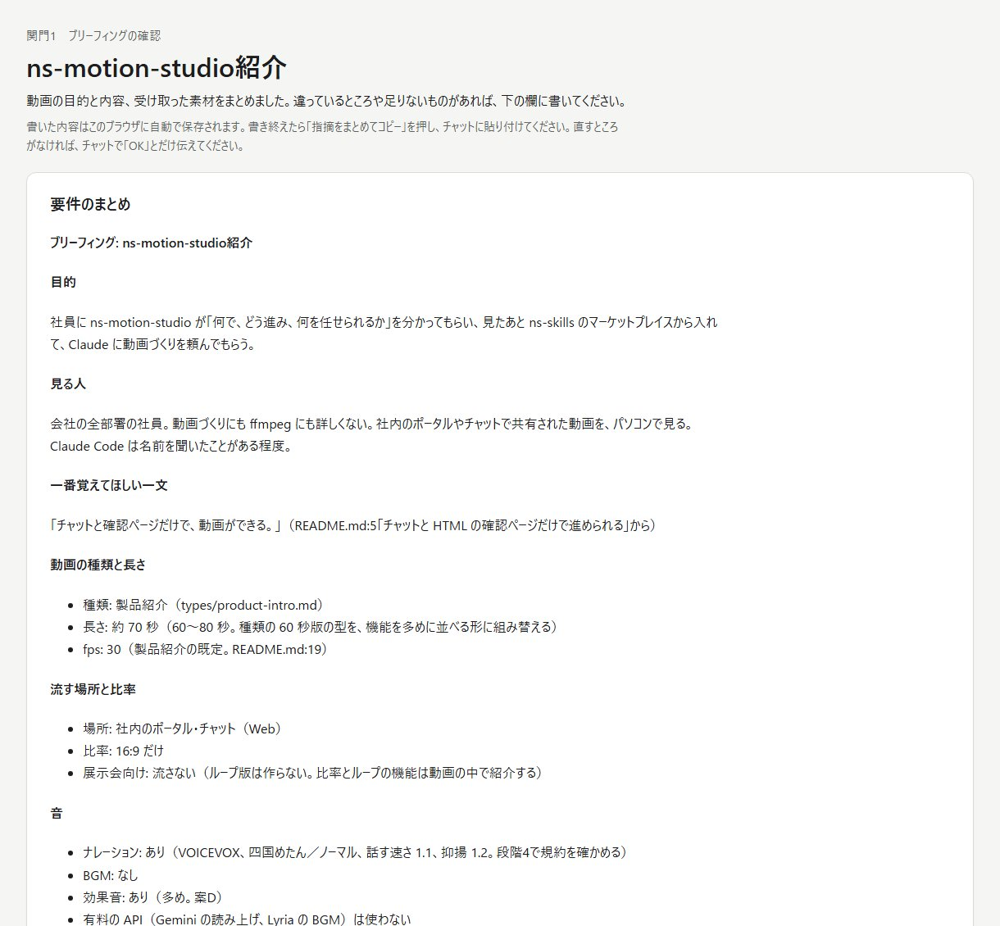
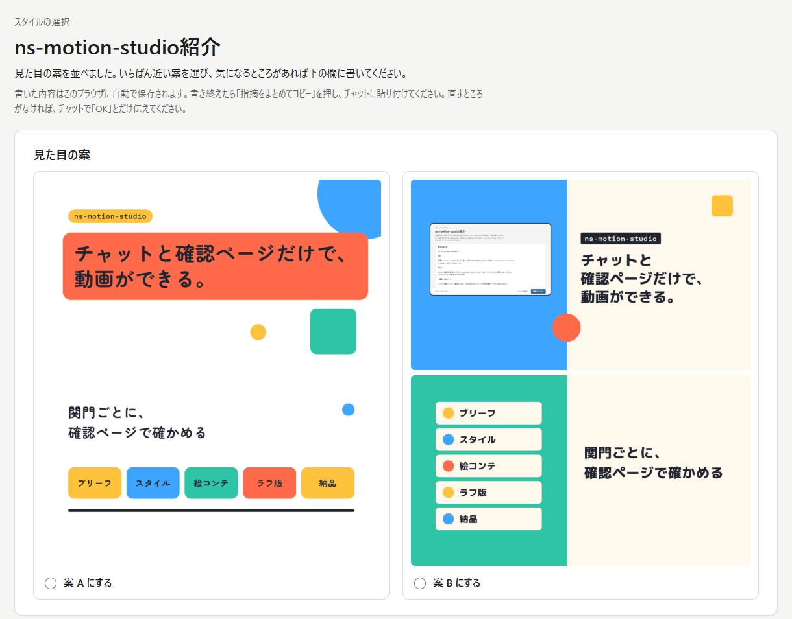
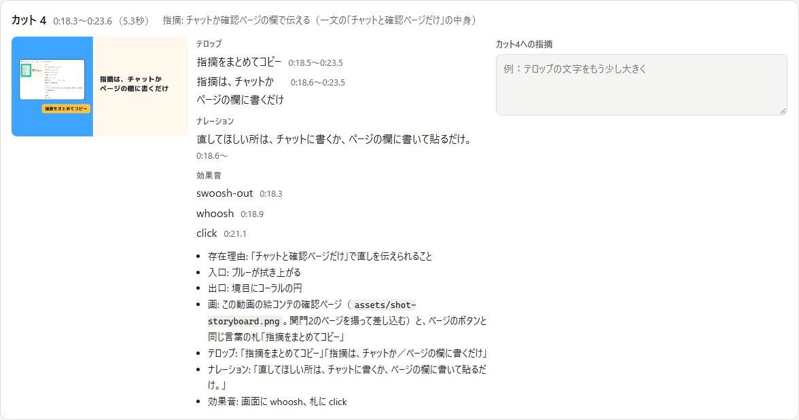
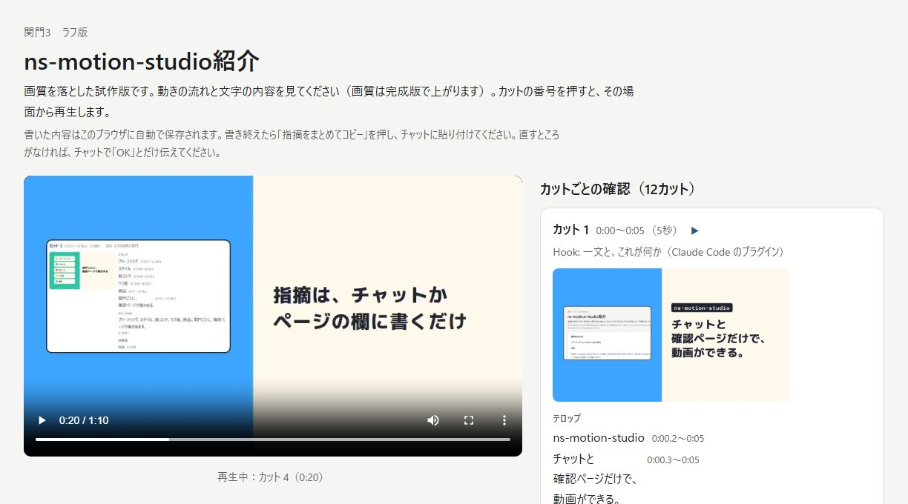
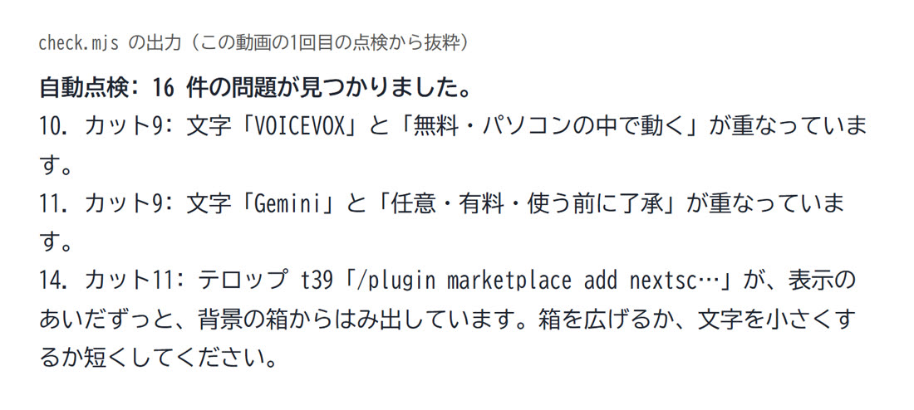

できること
ブリーフィング（聞き取り）、見た目の決定、絵コンテ、試作版の確認を経て、完成の MP4 を書き出します。急ぐときは確認を省いて短く作れます。
種類を問わない
誰に見せ、見た後どうなってほしいかを聞き、組み合わせて使える構成の型と、似た依頼の作例を選択肢として示して組み立てます。
- 製品・サービス紹介
- 解説
- マニュアル
- ロゴ
- 告知
- 採用
- 社内のお知らせ
スライドや既存資料をそのまま動画にする依頼と、実写風の映像や人物の生成は対象外です。
Web・SNS・展示会に合わせる
流す場所から比率を提案します。比率を増やすときは切り抜かず、比率ごとにレイアウトを組み直します。
- 16:9
- 9:16
- 1:1
- 4:5
展示会向けには、継ぎ目のないループ版（音なし）も作れます。
ナレーション
- VOICEVOX無料: 基本はこちら。パソコンの中だけで動き、原稿を外へ送りません。
- Gemini有料: 任意。使う前に注意事項と費用を案内し、了承をいただいてから使います。
効果音と BGM
効果音はコードで合成して付けます（外部サービスは要りません）。BGM は、持ち込みの音源か、Gemini での作曲（有料、了承が要る）から選べます。
事実は作らない、表現は自由に
数値、社名、事例、製品の機能は、渡された事実だけを使います。足りなければもっともらしい偽物は描かず、止めてお願いします。色や動き、点滅、ロゴの動かし方などの表現は、ご希望に合わせて既定から外せます。外したことは確認ページに一覧で出ます。
1本は5分まで
5分を超えると、品質と再現性を保ち、一部の直しに応えるために、章をまたぐ管理や差分の書き出しなど別の仕組みが要るためです。長いマニュアルなどは、5分以内の章ごとの連作にするよう提案します。
制作の流れ
本番のコースでは、5つの関門ごとに、HTML の確認ページで確かめます。はっきり承認するまで次の関門へは進みません。どの関門でも前の段階に戻れます。画面の画像は、押すと原寸で開きます。
工程の長さは3つのコースから選べます。ブリーフィングの最初に選び、途中で本番に切り替えることもできます（作ったものはそのまま引き継ぎます）。
- お試し: とりあえず試したいとき。確認は完成の1回だけ。
- サンプル: 短時間で見本が欲しいとき。書き出しの前に構成を1回確かめて、完成。
- 本番: 本番で使うとき。下の5つの関門をすべて通ります。
直してほしい所の伝え方は2通り。チャットにそのまま書くか、確認ページの欄に書いて「指摘をまとめてコピー」を押し、チャットに貼るだけです。直すところがなければ、チャットで「OK」と伝えます。
-
1ブリーフィング関門1
目的、見る人、一番覚えてほしい一文、長さ、流す場所と比率、音、使う素材を聞き取り、確認ページにまとめます。
あなたがすること質問に答え、ロゴや製品画面などの素材を渡す。まとめを読んで、違う所を指摘するか承認する。
ブリーフィングの確認ページ（紹介動画の制作から）。聞き取った内容が項目ごとに並びます。 -
2スタイルスタイル選択
構図・色・書体・動きの違う見た目の案を、実際に描いた静止画で並べます。
あなたがすることいちばん近い案を選ぶ。気になる所があれば書く。
スタイルの確認ページ。この動画では右の案B（左右に色の面）を選びました。 -
3絵コンテ関門2
カットの並び、画面に出す文字（テロップ）、ナレーションの原稿、効果音を、カットごとのラフ画と一緒に示します。文字はここで確定します。
あなたがすること言い回しと順番を確かめ、カットごとの欄に指摘を書く。
絵コンテの確認ページ（カット4）。右の欄にカットごとの指摘を書けます。 -
4ラフ版関門3
音を付けてシーンを描き、自動点検を通したうえで、画質を落とした試作版を書き出します。カットの番号を押すと、その場面から再生できます。
あなたがすること動きの流れと文字を見て、気になるカットに指摘を書く。全品質の書き出しは、ここで承認した後だけです。
ラフ版の確認ページ。左で試作版を再生し、右でカットごとに確かめます。 -
5納品納品確認
書き出しにかかる時間の見込みを伝えてから、全品質で書き出します。完成の動画、ポスター画像、使った素材と権利の一覧を確認ページにまとめます。
あなたがすること最後に全体を確かめる。素材の出どころとクレジットもここで見られます。納品の確認ページ。納品するファイルと、使った素材と権利の一覧です。 -
+部分修正
できた動画にも、「カット3のロゴをもっとゆっくり」のように指摘できます。指摘を数値の変更に直し、直したカットだけを書き出し直して、納品確認を取り直します。曖昧な指摘は、推測で直さずに聞き返します。
あなたがすること直してほしいカットと中身を伝える。


品質を守るしくみ
品質を決めるのは、頼み方ではなく仕組みです。「できたはず」では終わらせず、実際に書き出した絵で確かめます。
自動点検
- 文字の誤り（台本と画面の食い違い）
- 文字のはみ出し、重なり、字幕の帯への侵入
- 文字と背景のコントラスト
- 文字を読める表示時間
- 点滅（毎秒3回以下）
- 音量（動画配信で標準の大きさにそろえ、音が割れないこと。-14 LUFS ±1、ピーク -1 dBTP 以下）
- カットのつなぎ目のちらつき、ループの継ぎ目
- 何度描いても同じ絵になるか
止め時
- 同じ指摘が2回直しても残る、または5回続けて点検を通らないときは、直し続けずに止めて相談します。
- 自分での見直しは1周に3つまで。周の上限はコースによります（お試し1周、サンプル2周、本番4周）。残った問題は「残った妥協点」として納品ページに出します。
- 書き出しが見込みの2倍を超えたら止め、新しい見込みを伝えてから再開します。
- 有料の API は、呼ぶたびに回数と目的を示し、本人の「はい」を得てから使います。
直したシーンだけ書き出し直す
すべての絵を時刻から決まる形で描くので、前回と入力が同じシーンは描き直しません。一部を直すときは、直したシーン（と時刻がずれたシーン）だけを書き出します。素材の画像を差し替えたときは、全シーンを描き直します。



始め方
Claude Code に ns-skills のマーケットプレイスから入れて、頼むだけです。
-
Node.js 22.12 以上を用意する。
node --versionで確かめます。無ければ公式サイトから LTS 版を入れます（Windows ならwinget install OpenJS.NodeJS.LTS、Mac ならbrew install node）。動画を描くための道具（ブラウザと ffmpeg）は、初回にスキルが案内して入れます。 -
プラグインを入れる。 Claude Code で次の2行を実行します。
/plugin marketplace add nextscape/ns-skills /plugin install ns-motion-studio@nextscape - ナレーションを付けるなら、VOICEVOX を入れて起動しておく。 公式サイト（voicevox.hiroshiba.jp）から、お使いのパソコン用を入れます。起動している間だけ使えます。声は既定で四国めたんです。ほかの声にしたいときは、制作の途中で一緒に選びます。効果音だけの動画なら不要です。
-
頼む。 例えば次のように書きます。作りかけの動画の続きも、同じ呼び出しで制作フォルダを指せば再開できます。
/ns-motion-studio:make-video 新製品の紹介動画を作りたい最初に、新しく作るか続きからか、置き場所と題名を聞かれます。成果物は作業フォルダの下の制作フォルダに出ます（完成版は
out/、確認ページはreviews/）。
注意
有料の API は了承してから
Gemini（読み上げ・BGM）は任意で、使うたびに費用がかかります。使う前に注意事項を案内し、了承をいただいてから使います。キーは課金設定済みのプロジェクトのものを環境変数で渡します（無料枠では、送った内容が Google の製品改善に使われることがあります）。未公開の製品情報、顧客名、個人情報を含む原稿なら、VOICEVOX を使ってください。
VOICEVOX のクレジットと規約
VOICEVOX の声を使うときは「VOICEVOX:キャラクター名」のクレジット表記が要ります。使える声は、企業の動画でも申請なしにクレジットだけで使えると規約がはっきりしているキャラクターに絞ってあるので、制作のたびに規約を確かめる必要はありません。表記は動画の説明欄などに入れます。使った声と規約の要点は、納品ページの権利の一覧に残ります。
確認ページは手元のファイル
確認ページは制作フォルダの中の HTML ファイルで、どこにも公開されません。書いた指摘はそのブラウザの中に保存されるだけなので、「指摘をまとめてコピー」でチャットに貼って伝えてください。